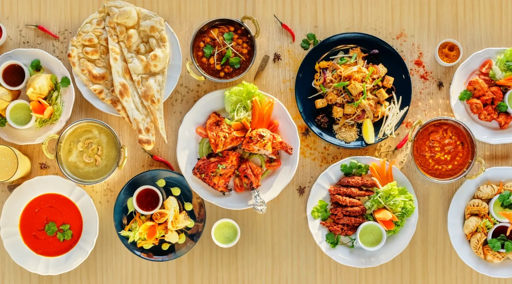
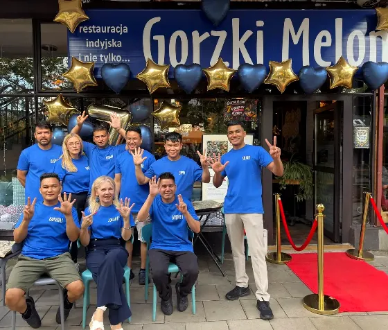
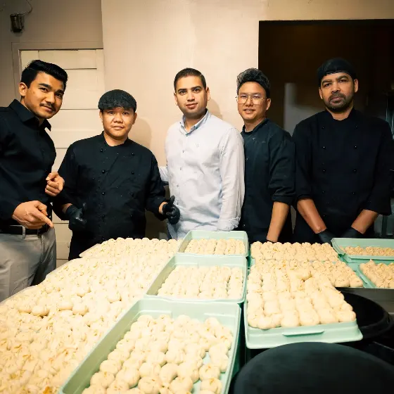
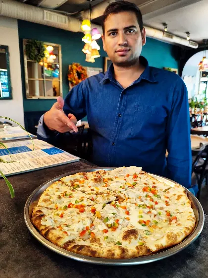
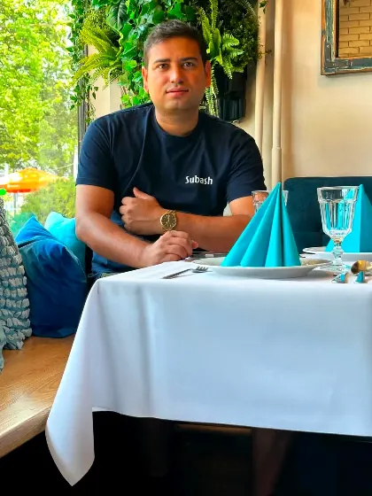
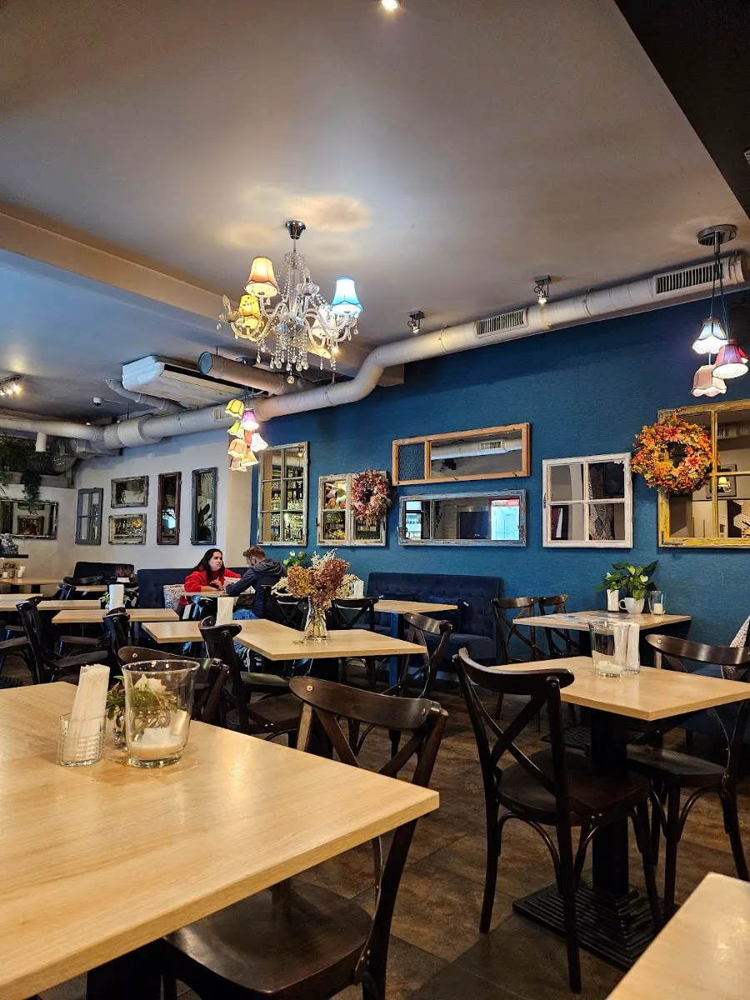
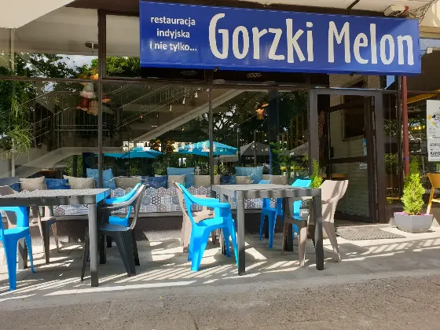

नमस्तेสวัสดีNamaste, Grochowska!
Gorzki Melon
kuchnia indyjska, nepalska i tajska — z europejskim sznytem
- भारतIndie
- नेपालNepal
- ประเทศไทยTajlandia
4,7 na Google · 747 opinii

manifest
Trzy kuchnie, jeden stół.
do dzielenia
Wystarczy usiąść, podać miskę dalej i powiedzieć, ile papryczek.
Gotujemy po nepalsku, przyprawiamy po indyjsku i podajemy tak, żeby każdy talerz trafił na środek stołu.
Indie · Nepal · Tajlandia
नमस्ते ludzie
Namaste, to my.
Nepalscy kucharze i obsługa, rodzina z Polski i Nepalu. Goście w opiniach najczęściej chwalą właśnie uśmiech przy stoliku.




opinie gości
Opinie gości
4,7
747 opinii na Google · 98% poleca na Facebooku
„Miła, serdeczna obsługa, przesympatyczni ludzie, pyszne jedzenie, lokal pełen uroku!”
„Miła, uśmiechnięta i pomocna obsługa, przepyszne jedzenie.”
„Porcje na tyle spore, że można się dobrze najeść.”
„Dziękuję za piękną organizację urodzin dla mojej Mamy!”
stolik albo dostawa
Zarezerwuj
stolik u nas
Wolisz zjeść w domu?dostawa codziennie 11:45–21:40 · na wynos: 517 800 732
Zamów

zupa, danie, ryż, naan i lemoniada · od 34 zł
odwiedź nas
Grochowska 178/184
lok. U9, 04-357 Warszawa · Kamionek, Praga-Południe
- Sala
- codziennie 12:00–22:00
- Lunch
- pon–pt 12:00–16:30
- Dostawa Wolt
- codziennie 11:45–21:40
- Telefon
- 517 800 732
